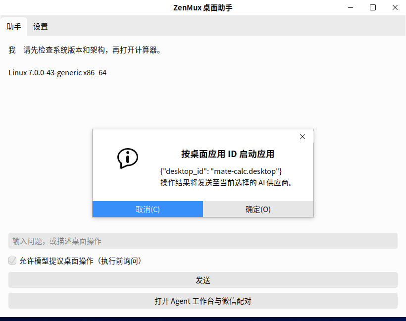
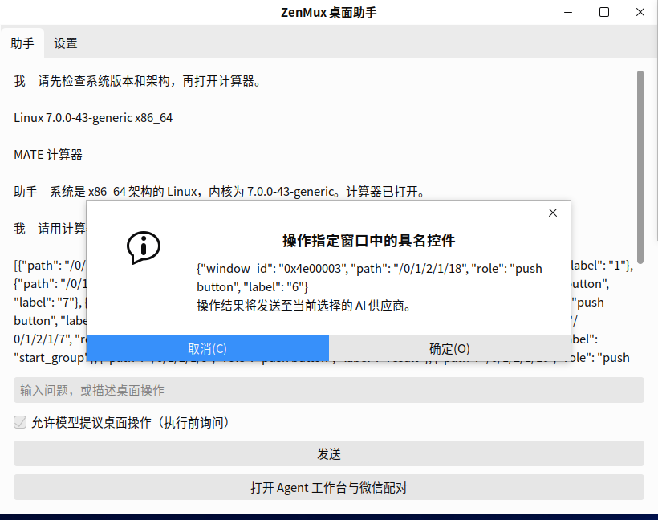
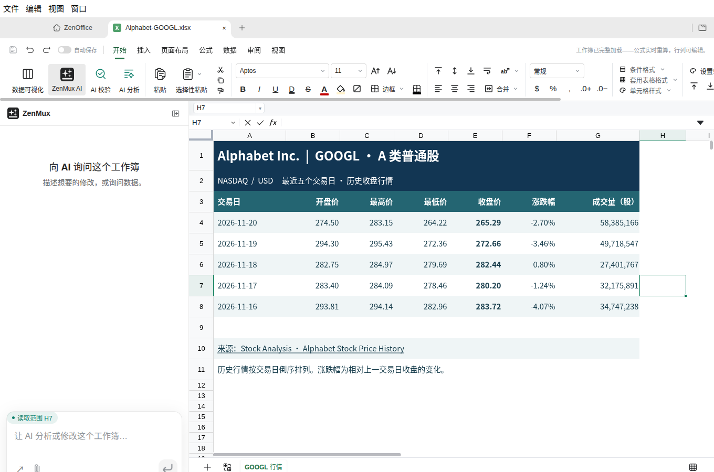

UBUNTU KYLIN 24.04.5 LTS / AMD64
AgentLinux
在桌面上交给 Agent，在微信里接着做。
 XP 风格中文桌面 · 在 QEMU 中通过 UEFI 启动
XP 风格中文桌面 · 在 QEMU 中通过 UEFI 启动桌面 Agent 真机演示
截自运行 AgentLinux 的 x86-64 笔记本。本次由当前会话的 Agent 提出工具调用，桌面助手逐步确认并执行。

查询系统并打开应用
助手读出内核版本和架构，然后请求按桌面 ID 启动 MATE 计算器。

识别并操作窗口按钮
助手读取计算器的可访问控件。图中是按下数字 6 之前的确认窗口。

在计算器中得到 42
依次激活 6、乘号、7 和等号后，计算器窗口显示实际结果。
从网页行情到 ZenOffice 数据表
在同一台笔记本上查询谷歌母公司 Alphabet 的 A 类股票（NASDAQ: GOOGL）。本次跨应用演示由外部 Agent 操作浏览器、提取公开行情、生成 XLSX，再用 ZenOffice 打开。
 浏览器实拍局部：Google Finance 显示 2026 年 11 月 20 日收盘价为 265.29 美元，较上一交易日下跌 2.70%。
浏览器实拍局部：Google Finance 显示 2026 年 11 月 20 日收盘价为 265.29 美元，较上一交易日下跌 2.70%。
ZenOffice 实拍：表格列出 11 月 16 日至 20 日五个交易日的开盘、最高、最低、收盘、涨跌幅与成交量，表内附有历史行情来源。下载演示工作簿 (.xlsx) · Stock Analysis · Google Finance
从桌面到手机的工作流
ZenCode 3.14.45
把任务交给工作台，在同一会话里查看进度、确认操作，或启用原生桌面观察与点击。
微信续接与文件回传
在工作台扫码配对，授权账号和工作区。手机可续接会话、回答确认请求并接收工作区文件。
多步桌面操作
授权后，助手可以查找并启动应用、切换窗口、识别并操作具名按钮，也可以检查网络、磁盘和系统服务。每次操作前可确认或取消。
AI 供应商与模型
助手默认使用 ZenMux，可保存其他兼容接口、密钥和模型。
中文输入与排版
Fcitx 5 拼音配合 Noto CJK 字体，覆盖网页、桌面编辑器与等宽终端。
Obscura Firefox 0.3.11
默认浏览器关闭 WebRTC。
CLAUDE CAGE / 0.2.0-rc
Claude Cage 隔离终端
按 Ctrl + Alt + T，或从应用菜单打开终端。首次打开终端时会进入 Claude Cage 0.2.0-rc 设置。在工作台创建本地账户并保存恢复密钥。完成工作台设置并启动客机后，再打开终端即可进入隔离会话。应用菜单里的“本机终端”可独立运行宿主机 shell。每个 Cage 窗口有自己的 shell，同一配置共用一台持久客机。Intel VT-x 或 AMD-V 需开启，Linux 用户需能访问 KVM。Apple Silicon 上的 x86 QEMU 模拟环境可连接远程 Cage。
选择启动和安装方式
试用 Live 桌面
LiveCD 默认自动登录。若出现登录界面，用户名为 ubuntu-kylin，密码留空，直接按回车。预装 SanDisk U 盘默认用户名为 agent，密码为 agentfudan。自行安装时，请使用安装过程中设置的账户和密码。
把 ISO 写入备用 U 盘（写入会清空该盘），从电脑启动菜单选择它。进入 Live 桌面即可试用；普通 Live 会话关机后会丢失改动。
安装到内置硬盘
在 Live 桌面打开“安装 Ubuntu Kylin”。按型号和容量核对目标硬盘，确认分区方案。安装器提示重启时拔出启动盘。
把系统装在 U 盘上
从安装介质启动，选择另一只 U 盘作为完整安装目标。以后从这只盘启动，文件、输入法词频和应用设置都可保存。另行配置双模式菜单后，还可选择 Live 安装入口。
合盖后继续远程工作
笔记本默认在合盖时关闭内置屏幕，接电和电池供电时系统都保持运行。你可以合上屏幕，让正在执行的 Agent 任务继续；网络保持连接时，也可以通过 SSH 继续操作。
2026.11.25.1 / 8.17 GiB
下载并启动
修复电池托盘在关机时崩溃、下次登录提示内部错误的问题。右键点击网络图标即可在小屏幕上选择 Wi-Fi，Live 桌面提供硬盘安装入口。
ZenCode 工作台可从应用菜单手动打开。内置 MyIME、原生微信、ZenOffice 和 GParted。点击已连接 Wi-Fi 的“属性”可查看 IPv4、IPv6、网关及 DNS。已验证安装到虚拟硬盘并从硬盘独立启动。从 Hugging Face 直接下载完整 ISO 和校验文件。请预留至少 9 GB 磁盘空间。
shasum -a 256 -c AgentLinux-24.04.5-desktop-amd64.iso.sha256
适用于 Intel / AMD x86-64，支持 BIOS 和 UEFI。Apple Silicon 可通过 QEMU 模拟运行；ARM VirtualBox 无法引导本镜像。普通 Live 会话关机后会丢失设置。
已在 Intel 笔记本上进入 Live 桌面并观察到安装器向目标分区复制文件。已在虚拟机验证从安装后的硬盘独立启动。